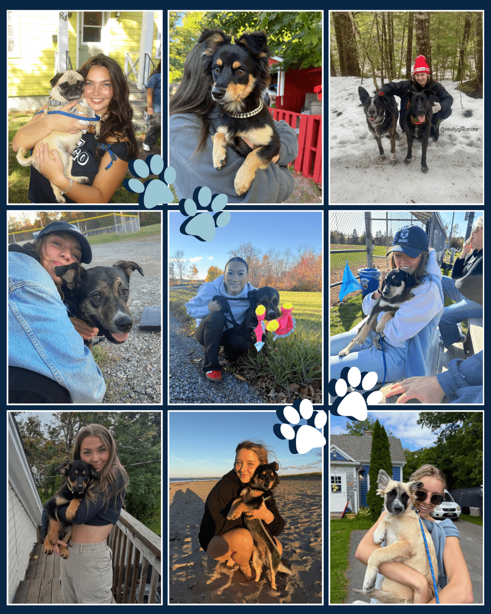
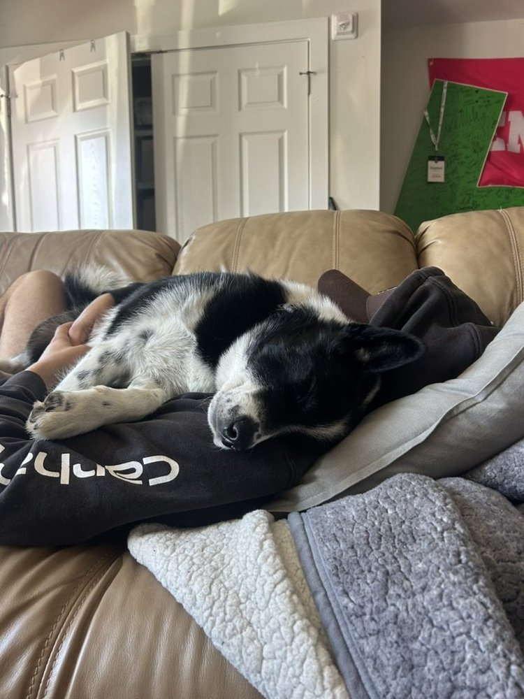

Adoption form
The current Coastal K9 site includes an adoption form for people ready to apply.
Start an applicationSaint Andrews, Nova Scotia
Every donation to Coastal K9 goes directly toward saving lives, helping provide food, medical care, shelter, and transportation for dogs in need.
 Follow rescue updates
Coastal K9 on Facebook
Follow rescue updates
Coastal K9 on Facebook
Adoption and foster
Coastal K9’s current foster page says dogs available for foster are at the shelter and featured on their social media.
The current Coastal K9 site includes an adoption form for people ready to apply.
Start an applicationFostering is described as temporary, flexible, and open to students and community members.
Learn about fostering
Use the Facebook page you provided as a public community link.
Open FacebookApplications
Select adoption, fostering, surrender support, event partnership, or general volunteering.
Share contact details, household fit, timing, pets at home, and any dog-specific notes.
The team reviews fit, answers questions, and confirms next steps before placement.


Foster homes
Fosters give dogs love, safety, and a chance to decompress while they wait for their forever family. Coastal K9 provides food, toys, beds, crates, leashes, poop bags, and restocks.
Fundraising
Cover diagnostics, surgery, vaccines, and medication for dogs arriving in poor condition.
DonateBlankets, towels, cleaning supplies, food dishes, crates, bowls, collars, leashes, and toys.
Offer suppliesMove dogs safely between shelter, vet care, fosters, events, and adoptive homes.
Help transportPrintable QR
QR target: https://coastalk9.ca/donate
Volunteer
Help with vet visits, foster moves, supply pickups, and event setup.
Coastal K9 invites people to reach out with event ideas involving dogs or puppies.
They accept dog supplies, shelter supplies, and event supplies.
The current site includes adoption, foster, and surrender forms.
Community
Coastal K9 says they would love to help bring event ideas to life and start planning together.
The current events page invites people to include dogs or puppies while making an impact.
Coastal K9 accepts event supplies such as yoga supplies, dog costumes, dog toys, and marketing supplies.